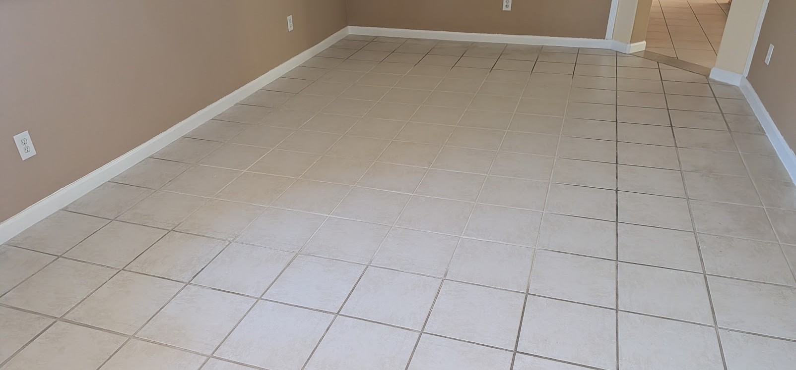
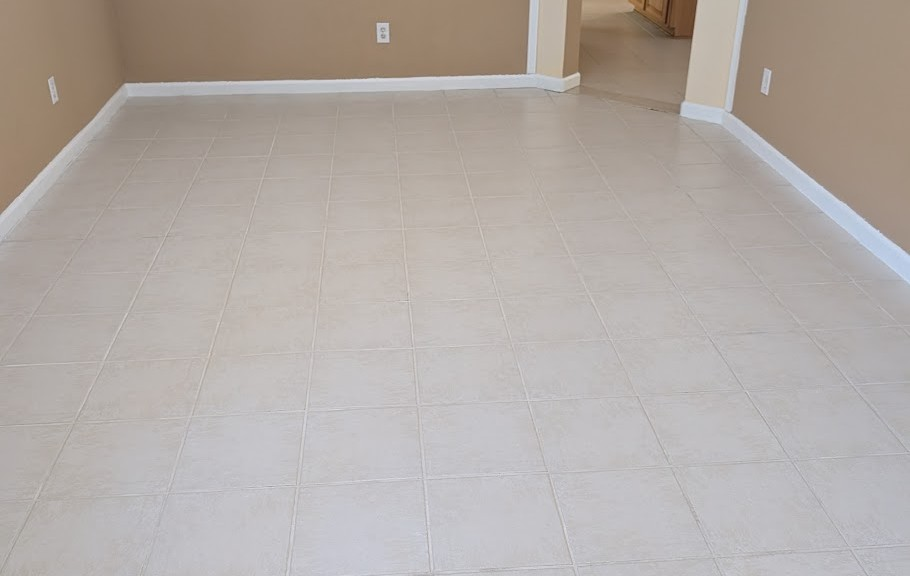
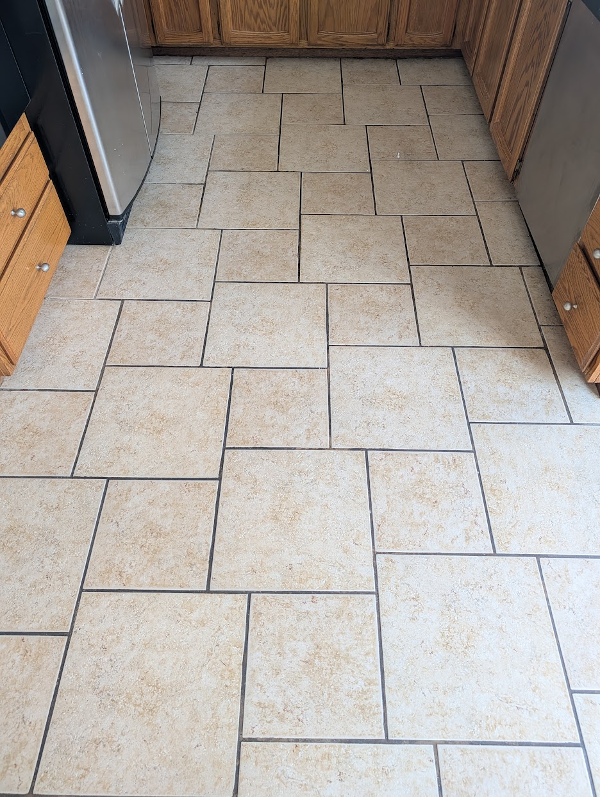
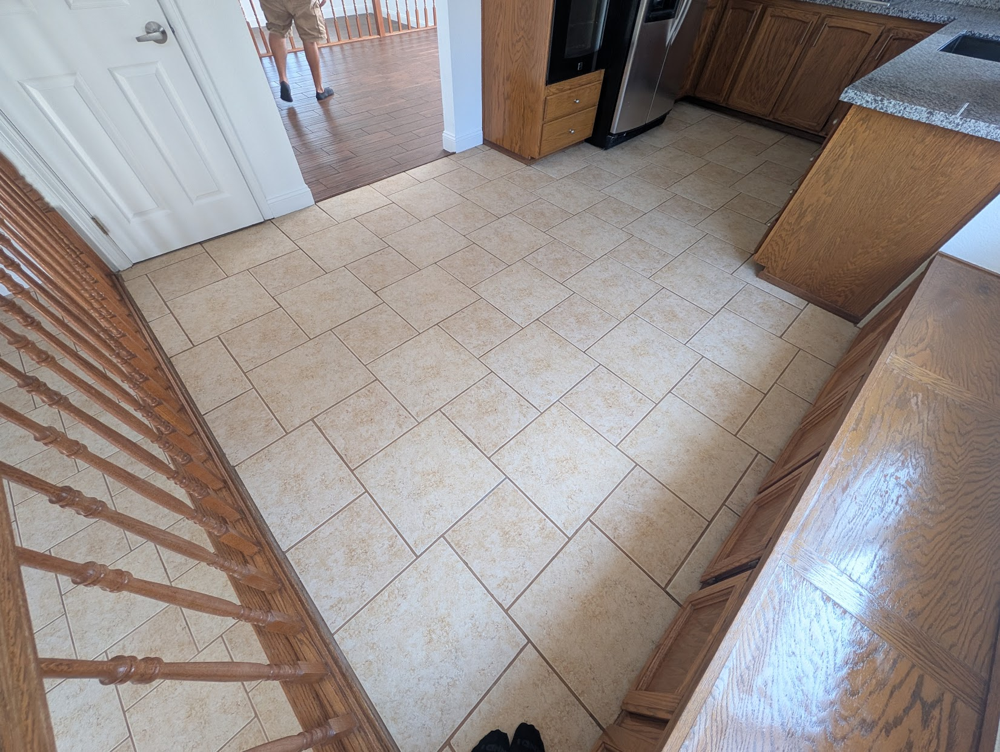
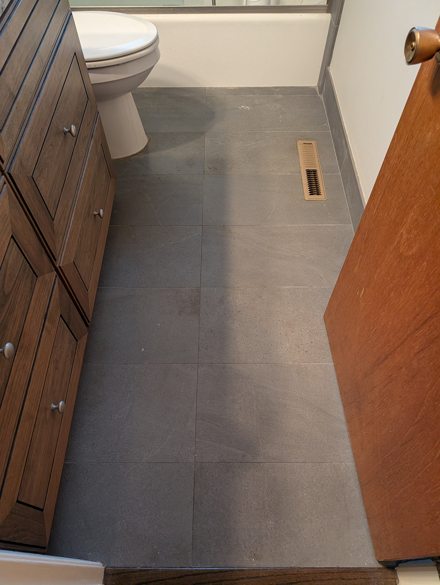
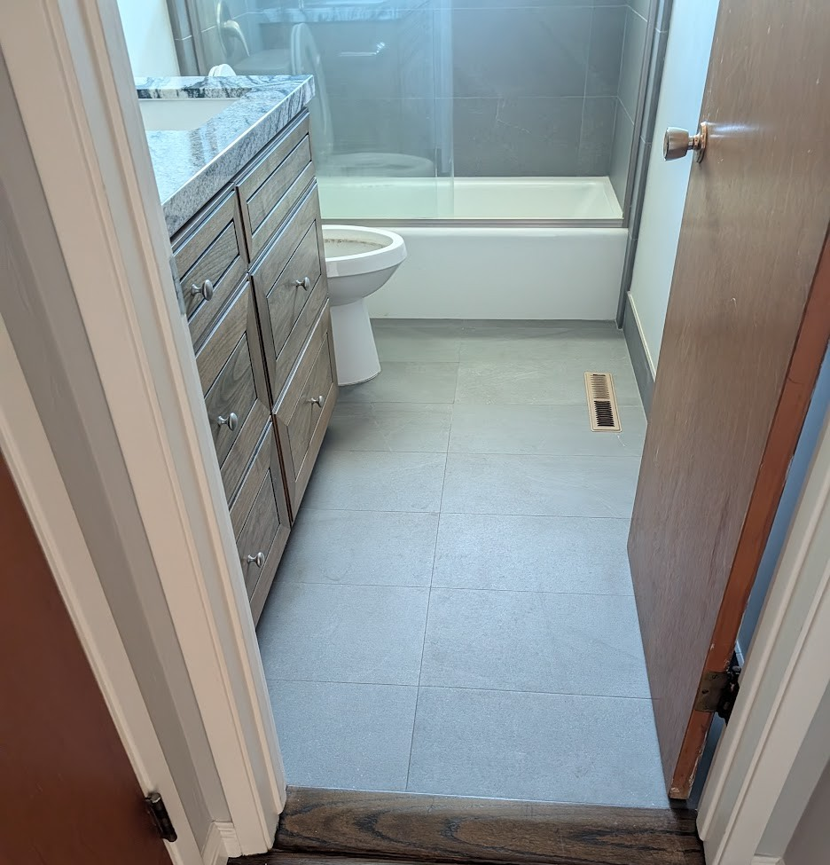

Tile & Grout Cleaning in Folsom & EDH
Real Results in Folsom
Same floors, before and after a Khean & Clean deep clean.

Before
AfterTile & grout cleaning · Folsom

Before
AfterTile & grout cleaning · Folsom
Ceramic vs. Porcelain (and Why It Matters for Sealing)

Before
AfterBathroom tile cleaning · Folsom
Both are clay tiles fired in a kiln. The difference is heat: porcelain is fired hotter, which makes it denser and harder.
Ceramic is usually glazed. It’s often shinier and can be more slippery when wet. A chip may show a different color underneath.
Porcelain is often the same color all the way through, and it tends to hide everyday soil better.
Here’s what they have in common: the tile face on both is dense and barely absorbs anything. Grout is the opposite. It’s porous, sits lower than the tile, and drinks in whatever touches it.
That’s why you should never seal the whole floor. Sealer is meant to soak into something porous. Grout takes it in. A glazed or porcelain tile face can’t, so the sealer just sits on top, dries into a cloudy haze, and collects dirt. On ceramic and porcelain, sealer belongs in the grout lines only, applied line by line, never mopped across the tile.
Why Grout Gets Dirty (Even in Clean Homes)
Grout is naturally porous, a bit like a hard sponge. Every time a floor is mopped, a little dirty water settles into it. Spills, kitchen grease, and everyday foot traffic soak in too. Over time, that soil builds up below the surface.
This happens to every tile floor. It’s simply how grout is made.
Because the dirt sits below the surface, a mop can’t reach it. Mopping often pushes dirty water deeper into the grout lines, which is why grout slowly darkens over the years even when the tile itself still looks fine.
Why Heat Matters
Hot water does much more than cold water. As cleaning solution heats up, it works harder: chemical cleaning activity roughly doubles with every 18°F increase in temperature. Heat, the right cleaner, enough time for it to work, and strong suction together lift soil out of the grout’s pores. Household mopping can’t match that.
Our Professional Cleaning Process
Material Identification
We begin with a thorough inspection to determine the specific type of tile and grout in your home, ensuring we use the safest and most effective cleaning agents for your unique surface.
Vacuuming & Soft Brush Prep
Our team removes loose debris and surface dust using vacuums equipped with soft brush attachments to protect your tile from scratching during the initial prep phase.
Professional Pre-Spray
We apply a specialized, eco-friendly cleaning solution designed to penetrate deep into the grout pores and emulsify tough grease, oils, and embedded soils.
Mechanical Agitation
Using professional-grade equipment, we mechanically agitate the cleaning solution into the tile and grout lines to break up stubborn buildup that manual scrubbing often misses.
Hot Water Extraction
Our advanced truck-mounted system uses pressurized hot water to rinse the surface and powerful suction to extract the dirt and cleaning solution, leaving your floors sanitized and residue-free.
Floor Buffing
As a final touch, we buff the floor to dry the surface quickly and restore a clean, consistent sheen across your entire tiled area.
How We Restore Your Grout
Deep Cleaning
We use high-heat cleaning and powerful extraction to pull trapped soil out of the grout’s pores, bringing it back toward its original color.
Grout Sealing
Freshly cleaned grout is still porous, so we seal it. A clear sealer fills the pores so spills and dirt stay on the surface, where they wipe away easily. On ceramic and porcelain, we seal the grout lines only, never the tile face, so your tile stays clear with no haze.
Color Sealing
Some grout becomes permanently stained or uneven over the years, and cleaning alone can’t fully fix it. Color sealing gives every grout line one uniform, like-new color you choose, and protects it at the same time.
A Note on Color Sealing
Color sealing sometimes gets a bad reputation, usually from do-it-yourself kits or rushed jobs that peel within a year or two. The results depend almost entirely on preparation. If grout isn’t thoroughly cleaned, cleared of old sealer, and fully dry, the color seal has nothing to bond to.
With proper professional prep and normal care, color sealing is widely reported to last 10 to 15 years. Clear sealers typically need reapplying every few years.
Keeping Your Tile & Grout Looking Good
Sweep or vacuum often. Loose grit settles into grout lines and wears them down.
Mop with a pH-neutral cleaner. Harsh or acidic products can weaken grout and wear away sealer.
Change your mop water frequently. This keeps you from spreading dirty water back into the lines.
Wipe up spills promptly, especially coffee, wine, and pet accidents.
Reseal when needed. High-traffic areas may need it sooner than the rest of the floor.
Frequently Asked Questions
Why is my grout darker than my tile?
Grout is porous and sits slightly lower than the tile, so it collects soil and mop water. Darkening is normal and usually comes from buildup, not damage.
Does sealing grout really help?
Yes. Sealing fills the grout’s pores, so spills and dirt stay on the surface. That makes everyday cleaning easier and keeps the grout looking clean longer.
Should the whole tile floor be sealed?
On ceramic and porcelain, only the grout should be sealed. The glazed tile face doesn’t need it, and sealer on the tile can leave a haze. Natural stone is different and is sealed across the whole surface.
How often should grout be professionally cleaned?
It depends on traffic, pets, and kids. Many homes benefit from a deep clean every 12 to 24 months, with regular maintenance in between.
Can stained grout be fixed without replacing it?
Often, yes. Deep cleaning removes most buildup. For stains that won’t come out, color sealing restores a uniform, like-new look.